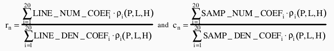
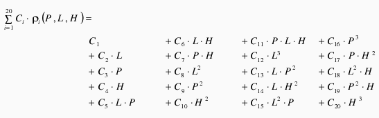

This extension proposes to stored essentially the same information as is stored in the RPC00B segment of an NITF file, but within a GeoTIFF tag. The RPC00B elment of NITF is defined in the STDI-0002 2.1 (16Nov2000) specification document. The mathematical model is defined in 8.2.4 of that document, and the disk layout of the information is defined in 8.3.12 of that document.
This proposal is being developed in cooperation with the ASPRS Softcopy Photogrammetry Committee, and is not yet adopted as part of the GeoTIFF specification. It is intended to be in line with the (still under development) section within ISO 19130 specification discussion of RPCs.
The geometric sensor model describing the physical relationship between image coordinates and ground coordinate is known as a Rigorous Projection Model. A Rigorous Projection Model expresses the mapping of the image space coordinates of rows and columns (r,c) onto the object space reference surface geodetic coordinates ( φ, λ, h ).
RPC supports a generic description of the Rigorous Projection Models. The approximation used by RPC00 is a set of rational polynomials exp ressing the normalized row and column values, (rn , cn), as a function of normalized geodetic latitude, longitude, and height, (P, L, H), given a set of normalized polynomial coefficients (LINE_NUM_COEF_n, LINE_DEN_COEF_n, SAMP_NUM_COEF_n, SAMP_DEN_COEF_n). Normalized values, rather than actual values are used in order to minimize introduction of errors during the calculations. The transformation between row and column values (r,c), and normalized row and column values (rn, cn), and between the geodetic latitude, longitude, and height ( φ, λ, h ), and normalized geodetic latitude, longitude, and height (P, L, H), is defined by a set of normalizing translations (offsets) and scales that ensure all values are contained i the range -1 to +1.
P = (Latitude - LAT_OFF) / LAT_SCALE
L = (Longitude - LONG_OFF) / LONG_SCALE
H = (Height - HEIGHT_OFF) / HEIGHT_SCALE
rn = (Row - LINE_OFF) / LINE_SCALE
cn = (Column - SAMP_OFF) / SAMP_SCALE
The rational function polynomial equations are defined as:
The rational function polynomial equation numerators and denominators each are 20-term cubic polynomial functions of the form:

where coefficients C1 ... C20 represent the following sets of coefficients: LINE_NUM_COEF_n, LINE_DEN_COEF_n, SAMP_NUM_COEF_n, SAMP_DEN_COEF_n
The image coordinates are in units of pixels. The ground coordinates are latitude and longitude in units of decimal degrees and the height above ellipsoid in units of meters. The ground coordinates are referenced to WGS84.
Note: The order of terms differs between different applications. This order is used with RPC00B and the Digital Point Positioning Data Base. RPC00A uses a different term order.
RPCCoefficientTag:
Tag = 50844
Type = DOUBLE (IEEE Double precision)
N = 92
Owner: Frank Warmerdam
The elements of this tag are:
| Name | Description | Value Range | Units |
|---|---|---|---|
| ERR_BIAS | Error - Bias. The RMS bias error in meters per horizontal axis of all points in the image (-1.0 if unknown) | >= 0 | meters |
| ERR_RAND | Error - Random. RMS random error in meters per horizontal axis of each point in the image (-1.0 if unknown) | >= 0 | meters |
| LINE_OFF | Line Offset | >= 0 | pixels |
| SAMP_OFF | Sample Offset | >= 0 | pixels |
| LAT_OFF | Geodetic Latitude Offset | -90 to +90 | degrees |
| LONG_OFF | Geodetic Longitude Offset | -180 to +180 | degrees |
| HEIGHT_OFF | Geodetic Height Offset | unlimited | meters |
| LINE_SCALE | Line Scale | > 0 | pixels |
| SAMP_SCALE | Sample Scale | > 0 | pixels |
| LAT_SCALE | Geodetic Latitude Scale | 0 < LAT_SCALE <= 90 | degrees |
| LONG_SCALE | Geodetic Longitude Scale | 0 < LONG_SCALE <= 180 | degrees |
| HEIGHT_SCALE | Geodetic Height Scale | HEIGHT_SCALE > 0 | meters |
| LINE_NUM_COEFF (1-20) | Line Numerator Coefficients. Twenty coefficients for the polynomial in the Numerator of the rn equation. | unlimited | |
| LINE_DEN_COEFF (1-20) | Line Denominator Coefficients. Twenty coefficients for the polynomial in the Denominator of the rn equation. | unlimited | |
| SAMP_NUM_COEFF (1-20) | Sample Numerator Coefficients. Twenty coefficients for the polynomial in the Numerator of the cn equation. | unlimited | |
| SAMP_DEN_COEFF (1-20) | Sample Denominator Coefficients. Twenty coefficients for the polynomial in the Denominator of the cn equation. | unlimited |
The RPC model in a GeoTIFF file is suplimentary to all other GeoTIFF tags and not directly related. That is, it is possible to have a conventional set of GeoTIFF tags (such as a tiepoint + pixel scale + projected coordinate system description) along with the RPCCoefficientTag. The RPCCoefficientTag is always describing a transformation to WGS84, regardless of what geographic coordinate system might be described in the coordinate system description tags of the GeoTIFF file. It is also possible to have only the RPCCoefficientTag tag and no other GeoTIFF tags.
The NITF RPC00B format uses limited prevision ascii encoded numbers for coefficients. Serializing internal "double precision IEEE" values to this format can result in a number of precision problems. The GeoTIFF representation stores all values as 64 bit IEEE double precision floating point values in the file, and should be more compatible with internal software representations of the model.
If no ERR_BIAS or ERR_RAND values are available, the special value of -999.0 will be used. Any negative value should be interpreted as "no error estimates available".